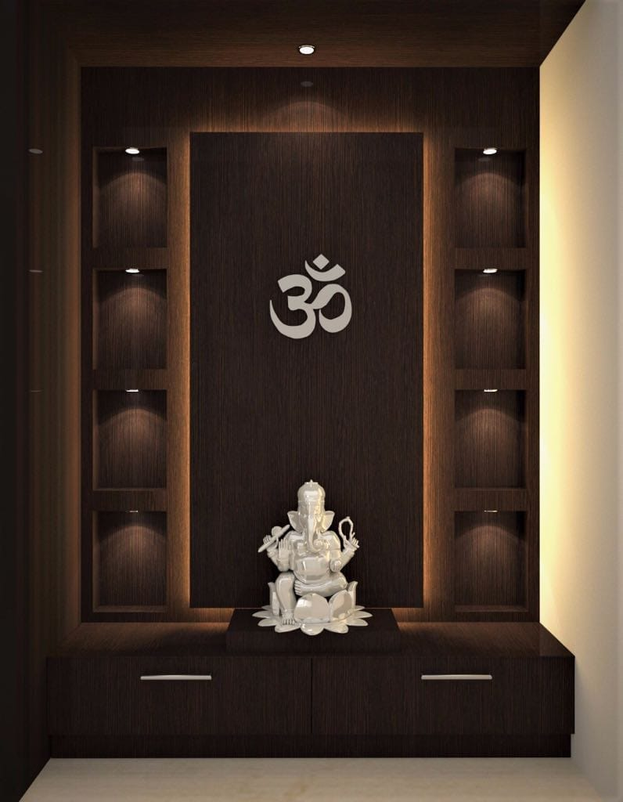

A calm, personal corner
Our pooja units are planned as part of the home, with a focus on a peaceful presence and a practical place for everyday rituals. Share your preferred location and style with our team.
RK Furniture & Interiors · Bangalore
Serene, soulful corners crafted for everyday rituals and considered to sit naturally within your home.

Our pooja units are planned as part of the home, with a focus on a peaceful presence and a practical place for everyday rituals. Share your preferred location and style with our team.